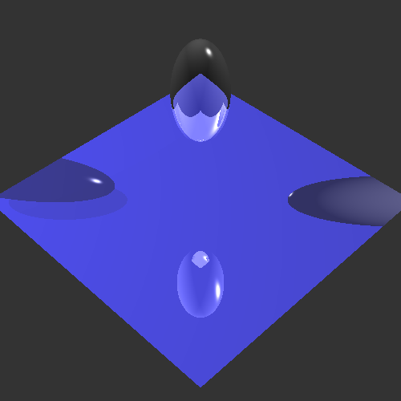

Art contest Submission: The creepy Duck

Made from the ray file located in leisenb5_html/CreepyDuck.ray and run with the following command:
Bin/Linux/Assignment2 --in leisenb5_html/CreepyDuck.ray --out leisenb5_html/TheCreepyDuck.bmp --width 500 --height 500 --rLimit 5 --cLimit 0.00001

3 types of light and 2 different objects submission
Made from the ray file located in leisenb5_html/test.ray and run with the following command:
Bin/Linux/Assignment2 --in leisenb5_html/MultipleLights.ray --out leisenb5_html/multipleLights.bmp --width 500 --height 500 --rLimit 5 --cLimit 0.00001
Final picture

Uses helper function RandomFloat to add random noise to image
Bin/Linux/Assignment2 --in leisenb5_html/test.ray --out leisenb5_html/good_result.bmp --width 500 --height 500 --rLimit 5 --cLimit 0.00001
List of implmented functions and their degree of implementation<
RayScene::GetRay Generate rays from the camera's position through (i,j)-th pixel of a widthxheight view plane. - Fully implemented
RayGroup::intersect Cast rays through scene-graph nodes. - Fully implemented
RaySphere::intersect Compute ray intersections with a sphere. - Fully implemented
RayTriangle::intersect Compute ray intersections with a triangle. - Fully implemented
RayScene::GetColor Return the color at the point of intersection using the ambient and emissive properties of the RayMaterial of the intersected shape. - Fully implemented
RayLight::getDiffuse Obtain the diffuse color contribution of the lights at the point of intersection. - Fully implemented
RayLight::getSpecular Obtain the specular color contribution of the lights at the point of intersection. - Fully implemented
RayLight::isInShadow Determine if the point of intersection is in shadow from a particular light source. - Fully implemented
- To implement, turn shadow term in RayScene::GetColor and RayScene::recursive to a double and call isInShadow instead of transparency
RayScene::GetColor Modify the computation of the color at the point of intersection to take into account the diffuse and specular contributions of all of the light sources - Fully implemented
RayGroup::intersect Modify this method so that it takes into account the local transformation returned by the call: RayGroup::getMatrix. - Fully implemented
RayScene::GetColor Implement RayScene::Reflect - Fully implemented
RayScene::GetColor Recursively cast refracted rays through the point of intersection and add the refracted color contribution to returned color value, ignoring the refraction index for now. - Fully implemented
- To implement this, uncomment first line of RayScene::Refract
RayScene::GetColor Allow transparent objects to cast partial shadows - Fully implemented
RayScene::GetColor Implement RayScene::Refract - Fully implemented
Accelerated Ray Tracing Accelerate ray intersection tests with hierarchical bounding boxes. - Fully implemented
RayShape::setBoundingBox - properly implemented for RayTriangle and RaySphere
RayGroup::setBoundingBox - Properly implemented
BoundingBox3D::intersect - Properly Implmented
RayGroup::intersect - Fully implemented
Accelerated Ray Tracing Modify RayGroup::intersect method so that it first computes the intersection with all the bounding boxes of all the child shapes, then sorts the shapes based on the proximity of their bounding box intersection and finally, tests the child RayShapes in order, allowing for early termination of the ray tracing. - Fully Implemented
Generate a 3D scene and save it as a .ray file. - Fully implemented
RayBox::intersect Compute ray intersections with a box. - Fully implemented
RayCylinder::intersect Compute ray intersections with a cylinder. - Fully implemented
All other parts of the assignment have not been implemented due to lack of sleep